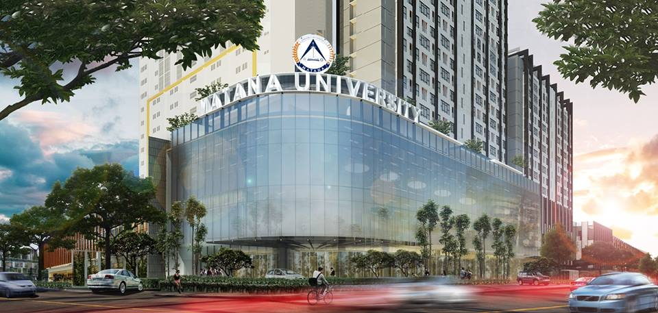

About Us
Matana berdiri dari 13 Agustus 2014 , yang berlokasi di Gading Serpong , di gedung Ara Center Tower D (Kampus sementara) lantai 1-5,dan lantai10-12, dengan 10 program studi. Universitas matana mendidik calon-calon eksekutif bisnis masa depan dalam berbagai bidang , dengan memberi penekanan yang seimbang antara pengetahuan akademikdan pembentukan karakter mahasiswa sehinggaa lulusan Universitas Matana adalah sarjana yang menguasai dan keterampilan tertetu dan memiliki intergritas , Pelyanan dana saling menghargai terhadap pemangku kepentingan dalam semangat intergritas dan pelyanan.
Designed by : Steven Cuaca & Dian Supriadi
Source Coded by : Steven Cuaca, Dian Supriadi, & Mikhael Raynaldi
Contents by : Ivandy Ricardo
Copyright © 2017 Matana University